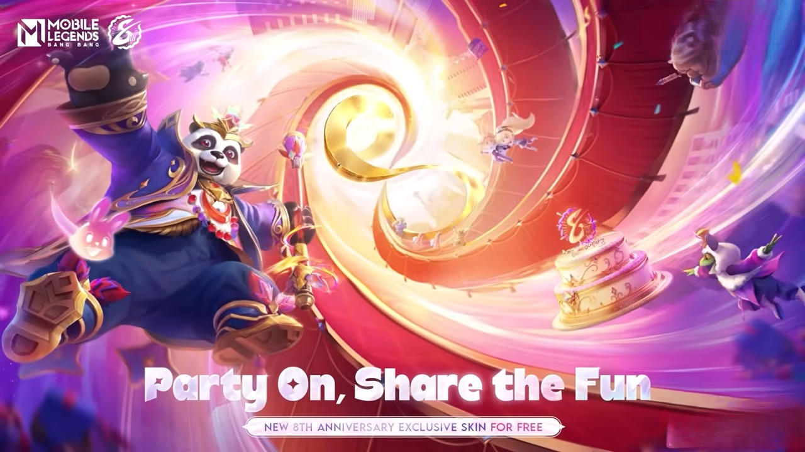
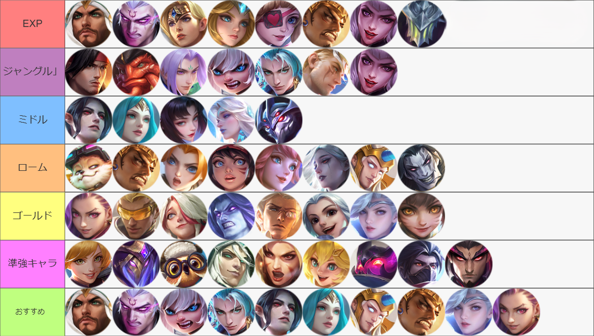

【モバイルレジェンド】レーン別最強キャラクター

モバイルレジェンドS34のレーン別最強キャラクターの表です。あくまでも私個人の考えです。また、弱いとされているキャラクター でも錬度が高ければ、活躍できます。

解説
誤差ですが左に行くほど評価が高いです。「ファニー」など、操作性の難易度が高いキャラクターは評価を少し下げてます。このキャラたちは使いやすくて強いので、初心者の方には特におすすめです。
１スキルと２スキルによる序盤の強さ、２スキルの回復、移動速度、コンボダメージ
アルティメットのダメージと回復、集団戦のの強さ
ファーム速さ、タワーを折る速さ、３スキルでの視界確保、アルティメット
機動力の高さ、２スキルによってタートルやロードがとりやすい
１スキルの火力による後半の強さ、アルティメットの逃げ性能と追い性能の高さ
CCの濃さ
機動力の高さ、１スキルのスタン、２スキルの攻撃速度減速効果
CCの濃さ、パッシブの通常攻撃強化
アルティメットのCC解除、火力
パッシブによって序盤の通常攻撃での殴り合いが強い、アルティメット